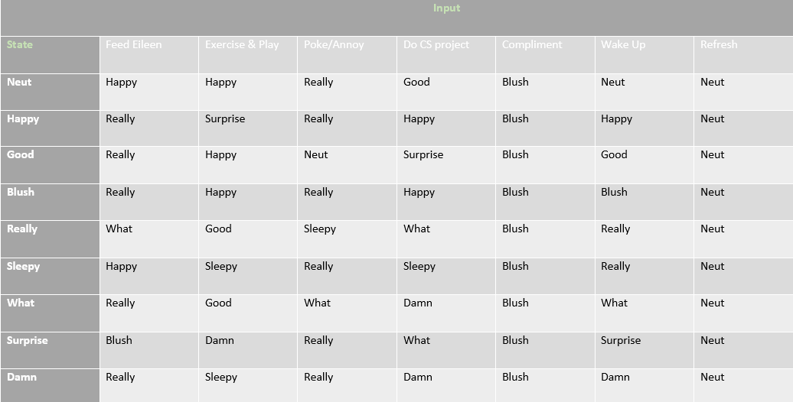
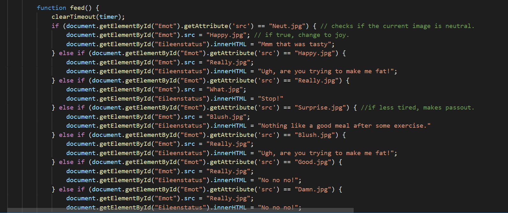

My Virtual Pet Hi-Leen
Hi-Leen, known by everyone else as Eileen, is a freshman CS major at Drexel University. In Northeast Philadelphia born and raised, is where Eileen spent most of her days. She is a multi-talented individual, a French Horn playing hurdler who loves the TV show the Office. She also likes movies like the Harry Potter series, Interstellar, and the Breakfast Club to name a few. Her favorite color is blue and she loves her black cats Smokey and Luna. The concept of the project Hi-Leen was inspired by the Pixar movie InsideOut which is about a girl named Riley who has a bunch of little people inside her who control her different emotions. The reason for choosing this concept was because I enjoy the idea of every living thing having things in thier heads which cause them to react to different situations.
How Did Eileen Become My Virtual Pet?
Sadly, I must note that Eileen became my virtual pet against her will, I am required to disclose that she involuntarily participated.
Eileen's States
Neut
Happy
Good
Blush
Really
Sleepy
What
Surprise
Damn
How to Make Eileen Change States
Feed
If Eileen is in a neutral state and you feed her, she becomes happy.
If Eileen is happy and you feed her some more, then she becomes annoyed.
If Eileen is annoyed and you try feeding her again, she becomes angry.
If Eileen is tired and you feed her, she could either become happy, or be annoyed.
If Eileen is asleep and you feed her,she becomes happy.
If Eileen and you try to feed her, she becomes annoyed.
Exercise & Play
If Eileen is in a neutral state and you exercise with her, she becomes happy.
If Eileen is happy and you exercise with her, she starts getting tired.
If Eileen is tired and you try to make her exercise, she passes out
If Eileen is passed out and you try to exercise with her, she ignores your command and continues to sleep.
If Eileen has had too much to eat and you make her exercise, she becomes excited.
If Eileen excited and you keep exercising, she becomes less excited then tired before passing out.
Poke/Annoy
This command often has a negative outcome. For example, If Eileen is in a good mood, and you poke/annoy her,
she becomes angry or annoyed. whereas if she is in a bad mood and you poke/annoy her, she becomes
sad/tired.
Do CS project
If Eileen is in a neutral state and you make her do the CS project, she attempts to do it with a positive mood.
If Eileen had attempted to do the project and you make her do it again, she becomes annoyed and confused.
If Eileen is annoyed or confused by the project, and you make her do the project, she gives up.
If Eileen is in a good mood and you make her do the project, she completes the project.
If Eileen is in a bad mood and you make her do the project, she does it but gets fustrated by the project and gives up.
Compliment
Whenever a compliment is payed to Eileen, she smiles and compliments back.
Wake up
If Eileen passes out because of exhaution and you wake her up, she becomes annoyed
If Eileen is not asleep and you try to wake her up, she ignores your command and lets you now that she is already awake.
Refresh
This function is used to return Eileen to her original state. No matter what state Eileen is in, if this button is clicked,
she returns back to her neutral state.
State Machine
Description of Code(For developers)
This code runs on functions. That is, each button has a specific function. For example, the feed button reads the function below in order for the action to be carried out:
Feed:
Each function is made up of multiple If statements. If statements are used to ensure that the pet reacts differently depending on how many times the button is clicked. I ensured if strenuous functions such as Exercise or eating food were done too many times, the pet would get angry. I inserted a timeout function which would cause your bet to get angry if you do not press any buttons within 10 seconds.
.png)
For each function to react to the timeout function, i used a clearTimeout function which clears the timeout if the button is pressed. I used a div because i had created two seperate functions to be run and viewed for each buttons. The two different functions show Eileen's reaction to the button and which of her 5 emotions stimulated the reaction. The div allows the two different images to be on the same line beside each other.
Click to go back to virtual pet